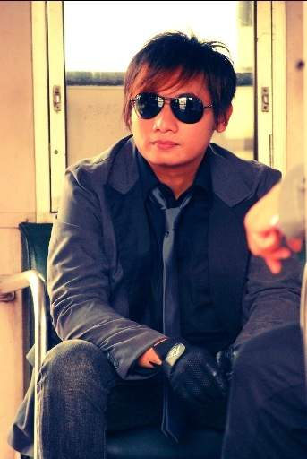

Brian

| Nama | : | Brian Kresno Putro |
|---|---|---|
| Nama Panggilan | : | Brian |
| Posisi | : | Drummer |
| Tempat /Tgl. Lahir | : | Jakarta, 22 Januari 1981 |
| Tinggi /Berat | : | 168/63 |
| Agama | : | Islam |
| Hobby | : | Music, Film |
| Warna Fave | : | Putih |
| Pakaian Fave | : | Casual |
| Acara TV Fave | : | The Simpsons |
| Jenis Film Fave | : | Drama, Komedi |
| Jenis Musik Fave | : | Alternative Rock |
| Lagu Fave | : | Walk on [U2], Cochise [Audioslave] |
| Motto | : | Just Walk On |